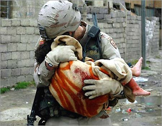

"The president carries the biggest burden, obviously. He's the one who has to make the decision to commit young Americans, but we are fortunate to have a group of men and women, the all-volunteer force, who voluntarily put on the uniform and go in harm's way for the rest of us."
Dick "Cthulhu" Cheney, the incarnate expression of unfiltered evil, discussing the completely useless and unjustified death of 4,000 Americans in the Idiot King's illegal war
Does anyone living where reasoning bears sway honestly believe that George W. Bush, whose brow has never known the sweat of honest labor or been furrowed in socially useful thought, is "burdened" by his whimsical decision to send Americans to kill and die in Iraq?
Is there anybody -- apart from Sean Hannity and other cerebrally-challenged and character-deficient partisan whores -- who would profess to believe that Bush, who lives in the cushion of unparalleled luxury, travels in a cocoon of impenetrable security, and whose every transient appetite is immediately satisfied, groans under a burden comparable in any way to an American GI on his second, third, fourth, or fifth tour of duty in Iraq?

Buck up, soldier: Bush the Dumber contemplates the burdens of the Iraq War as he prepares for a mountain bike ride (above); he courageously conceals the anguish of his soul while polluting a golf course (below).
With his "surge" proving to be a pointless, cynical exercise in marketing, Bush has blithely let it be known that a "pause" will take place in the process of withdrawing troops from Iraq. This means that tens of thousands of Americans who had dared entertain the hope of returning to their families and putting the war behind them have had seen those hopes ruthlessly crushed.
Some of them won't return. Many others won't return whole in body, mind, or soul.
Some will see their marriages end, their families disintegrate, their civilian jobs evaporate, or their homes foreclosed on as a result of repeated deployments to Iraq. But their burdens are trivial, according to Cheney. They are mere trifles compared to the sufferings of our divine Emperor-King.
The American Conservative recently reported that the 3rd Battalion, 4th Marine Regiment "just returned to Iraq for a fifth tour." That unit includes Reymondo Parra, who has already earned two Purple Hearts in Iraq. The "signature wound" of this war, notes the magazine, is IED-inflicted traumatic brain injury.
Thousands of Americans have been left incapacitated by IED attacks. And "even those who escape without visible damage are experiencing long-term effects," American Conservative observes. "One in six troops sustains at least one concussion in Iraq, and of those reporting loss of consciousness, 44 percent go on to suffer from post-traumatic stress disorder. Symptoms include sleep problems, psychological disruption, and social adjustment issues.... One immediate tally is rising at an alarming rate: in 2007, suicide among active-duty soldiers reached its highest level since the Army began keeping records, up 20 percent from the year before."
But surely, as Cheney insists, the unseen wounds inflicted on our all-compassionate Emperor are graver and deeper still. Sure, he seems to be an vindictive, incurably superficial dimwit who is proudly indifferent to the facts, contemptuously dismissive of anything but his own desires and assumptions, and who sleeps the untroubled sleep of a sociopath. But ... that's just a brave front, y'all, albeit a very convincing one. His is actually a soul of such trackless depths that he can't help but mourn the loss of every single soldier, and feel every tremor of their pain.
Well ... maybe not.

It's hardly uncommon to hear people speaking obscenities. Dick Cheney, as the comment quoted above reminds us, is himself an obscenity.
His reflexive reaction to a question about the protracted agonies being inflicted on military personnel and their families by the political class is to demean those sufferings while casually asserting a proprietary claim on their lives: The soldiers volunteered, Cheney insists, which means that we (those at the top of the oligarchy) can do with them as we please for as long as we want.
The question that prompted Cheney's obscene remarks dealt with the practice of "stop-loss," which is probably the most brazen of the numerous ways the Regime unilaterally redefines the terms of an enlisted man's service contract.
Stop-loss orders are a form of conscription. They impose an involuntary extension of a soldier's enlistment period, irrespective of the specific terms of the service contract.
Joshua Key, who enlisted in the Army in 2002 and served seven months in Iraq, recalls asking his sergeant about the sanctity of the contract he had signed -- and his sergeant's Cheneyesque reply.

The conversation began with Key asking "What's the point" of the war. He was part of a unit that routinely raided Iraqi homes in search of supposed terrorists and arms caches, only to find neither -- even though every male taller than five feet in height was routinely zip-cuffed and taken away to heaven only knows where.
What's the point of this? Key asked his sergeant.
"There is no point -- it's just your job," came the reply.
"But what's the justification for this war?" Key persisted with touching, if misplaced, faith in human reason.
"The justification is that you signed a contract and you're told to be here," pronounced the sergeant, channeling Cthulhu with remarkable fidelity.
"But when do I get to go home?" Key pressed, no doubt with a growing sense of disillusionment.
"Private," the sergeant hissed, "we can keep you here just as long as we want, and we ain't never got to send you home."
Key wasn't afraid of combat. He came from a small, economically depressed Oklahoma community in which fighting and firearms were common. Violence was also common during his distressed upbringing. He actually enjoyed basic training, and was blessed with an impressive skill-set (he was an adept welder and automotive mechanic) that made him very valuable.
But he couldn't abide the sense that he had become implicated in a hideous, world-historic crime as the result of a bait-and-switch.
Yes, he did sign an enlistment contract.
Sure, the recruiter had told him to conceal the fact that he and his wife already had two children and a third on the way -- a status which would disqualify him from enlisting.
Sure, the same recruiter had likewise told him to keep to himself the fact that he was seriously in debt -- another impediment to both Joshua's enlistment, and the recruiter making his quota.
And, well, sure, the same recruiter had promised him, in all apparent sincerity, that Joshua would be given "nondeployable" status as a bridge-builder for the Army Corps of Engineers.
"You're going to be building bridges from nine to five every day and spending every evening home with the family," lied the recruiter, who scribbled the acronym CONUS -- for "Continental United States" -- on the enlistment contract as supposed surety of this agreement. Asked later for supplemental reassurance, the recruiter promised that "Because of your growing family, you would be the last person sent overseas."

All of this took place in 2002. In 2003, Key was among the first to be sent to Iraq.
His training at Fort Carson clearly anticipated that deployment: During bayonet drills, he and the other recruits were urged, "Kill! Kill! Kill the sand niggers!" The rules of engagement, he was told, were quite simple: "If you feel threatened, kill first and ask questions later."
His training with C-4 explosives was sometimes set to an inventively depraved cadence that could just as easily have been chanted by trainees at an al-Qaeda camp in Pakistan: "Take a playground, fill it full of kids; drop on some napalm, and barbecue some ribs."
Where his unit was concerned, Joshua writes, "Iraqis were not people at all -- they were terrorists, suicide bombers, sand niggers, and ragheads..... We were taught to think of Iraqis in degrading ways during military training, and those attitudes crossed the oceans with us when we flew into battle."
Although he and his comrades came under enemy fire on numerous occasions, they never fixed their sights on actual combatants: They "were on the run and gone while we were still diving for cover against flying shrapnel. We fought back by lashing out at civilians who had no means to defend themselves. It seemed the only way we could fight back -- but it was wrong."
Shortly after Joshua's above-quoted conversation with his sergeant, he went on patrol with another sergeant named Fernandez. As their APC passed beneath a grove of palm trees, Joshua described how easy it would be to ambush the unit. "To my surprise," Joshua recalls, "the sergeant did not lecture me for speaking my mind. Softly, he told me, `I'd do the same thing if people invaded America.'"
That brief conversation catalyzed Joshua's misgivings about the war. If a foreign power occupied the United States, if its soldiers "blasted into my home and terrorized my family," Joshua writes, "I would become a force to be reckoned with. I would invent my own booby traps and come up with the most unexpected methods of mayhem. I would give the occupiers hell and keep at it until I was dead and gone, twice over."
For this reason, Joshua decided that he was fighting the wrong war, the wrong way, against the wrong enemy. The real enemy was at his back -- the Decider Guy, his adult handler, and the Power Elite they represent. They had orchestrated the horrors in Iraq and taken cynical advantage of those who enlisted in the mistaken belief that they would take part in the actual defense of our country.
Joshua was deceived into signing his contract, misled about the cause and purpose of the war, and put into a position in which would be among those who would be sent into Iraq as many times as the Grand and Glorious Decider considered necessary, to kill and terrorize people for no reason that made sense.
So when he was sent back to the United States on furlough, Joshua excused himself from any further responsibility for a supposed commitment that had been made in bad faith. Because the Government ruling us didn't obey the terms of its contract, Joshua simply quit. This meant that he and his family (which has now grown to include four children) had to flee to Canada, since the Regime still claims the supposed right to murder soldiers who decide to quit their jobs and seek other employment.
Joshua describes that experience, as well as those recounted above and a few too horrifying to contemplate, in his book The Deserter's Tale: The Story of an Ordinary Soldier Who Walked Away from the War in Iraq.
(Continues after the jump.)


Some wounds can't be seen, and will never heal: A US soldier weeps in anguish as a young Iraqi girl dies in his arms. Some American servicemen, according to Joshua Key, have been trained to dehumanize the Iraqis. Obviously, many of them (such as Key himself) either weren't given that indoctrination, or simply retain the innate decency inscribed on their hearts by the Creator. For them, and for many others, the Iraq war will continue to be hell long after it ends, assuming that it ever does.
A contract that is binding only on one party, and can be revised at will by the other party, isn't a contract in any sense I can recognize. The Regime claims that it can extend the period of service required of enlistees; equity demands that enlistees be able to abbreviate their service at will as well, perhaps forfeiting some portion of their enlistment bonus in the process.
If we truly had a volunteer military, would "desertion" be a crime? I can't see how it could be. Under the Nuremberg Principles, there are times when desertion, or something closely akin to it, is a moral imperative. This is a point made by Joshua Key, Ehren Watada, Ricky Clousing, and other defecting soldiers who have properly described the Iraq War as illegal, immoral, and insupportable.
It will be recalled that George W. Bush, whose Vietnam Era military "service" was of a piece with his seamlessly privileged life, unilaterally redefined the terms of his own enlistment contract to suit his fancy, and suffered no punishment of any kind.
Ah, but surely Providence spared the young Bushling such torments, foreknowing the grievous burdens he would eventually have to bear as he sent less privileged Americans off to fight in Iraq.

Dum spiro, pugno!
19 comments:
Thanks Will,
I love your articles and this one was especially good
Truly a sobering message and one that needs to be constantly repeated. This war continues to grind on with no end in sight and virtually ignored by everyday americans. Yet their are human lives at stake in this sad drama. I dearly wish the Church would take up the banner of peace and liberty and proclaim the message loud and clear throughout the land. But alas in these times such a message is missing. It deeply grieves me to see such a sad state of affairs.
I hope a civilization 6 billion strong doesn't let a few thousand vampiric, dr. strangelovian, warpigs flush it down the drain.
Why can't The Dick Cheney have another heart attack? He had one once before. His heart could explode inside his chest, shredding his aorta and causing massive internal damage with blood pouring from every orifice. The blood would be so thick it'd appear to be black in color.....oh, wait! That is its natural color! Wow. Well, I'll be....
The blood could pour out from his anus and thus remove David Rockefeller's fresh semen. Call it a more natural enema.
Quote: As their APC passed beneath a grove of palm trees, Joshua described how easy it would be to ambush the unit. "To my surprise," Joshua recalls, "the sergeant did not lecture me for speaking my mind. Softly, he told me, `I'd do the same thing if people invaded America.'"
In 2004, I was debating with a Fox News-influenced ex-cop who confidently asserted that the Iraqis would love us for bringing them democracy. None of my counterarguments made any impression on him except the one quoted above -- that if foreign tanks were rumbling down the road in front of our house, sniping and ambushing would become my full-time avocation. He didn't agree that the analogy applied to Iraq, but at least he understood my logic.
Today, he discreetly avoids talking about Iraq. But I still recall the near talismanic significance that the noble abstraction of "bestowing the gift of democracy" had for him. With its eucharistic overtones, "democracy" seems to have become a secular religion.
It makes sense that Bush and Cheney would harp on democracy, even as it becomes dysfuntional at home. Voters who elected a Democratic majority in both House and Senate in 2006 evidently wanted the Iraq War wound down. Instead, they got a "surge." What's a demagogue to do, but pound the table ever harder for our glorious democracy? Doubtless Comrade Mugabe is doing the same in Zimbabwe today, as the patently massaged "election results" are released.
As for "stop loss," the governing legal principle is that a fraudulent contract is invalid ab initio and can be voided. Unfortunately, the courts have repeatedly allowed government to abrogate its contracts, fraudulent or not. Ask the Native Americans how that works.
As scripture states" we war not against flesh and blood but against principalities of darkness". The more evil and base I see our leaders become the more I am convinced that (some - not all) are literally demonic. But their evil pales in comparison to the justice and wrath of God. God will ultimately destroy their best laid plans. As Martin Luther once penned" even the devil is God's devil". Armed with the principles taught in Scriptures ( and known to much of humanity both regenerated and unregenerated due to Gods common grace) the ideas and plans of these wicked demons can be rolled back - one argument or idea at a time.
I'm sacrificing for the home front by putting yellow ribbons magnets everywhere, hopefully it gives the troops comfort as they are getting blown up. Ohh they are having a group hug of hearing impaired nazi satan worshippers on dr phil gotta run.
This wont be popular, but I wouldnt quote from the 'Nuremberg Principles' as if there were some kind of noble thing. Robert Taft had it right - it was victor's justice - with the the allied powers being the victims, judges, and jury all at the same time.
Mr. Maxwell, you're entirely correct to reject the "victor's justice" of the Nuremberg mock-tribunal. By referring to the "Nuremberg Principles," of course, I was alluding to the well-understood concept that a soldier has a moral duty to oppose illegal and/or immoral orders. The admittedly problematic reference to Nuremberg was intended as shorthand.
Since appropriations for pay cannot be guaranteed for longer terms, legally (Constitutionally), the United States of America cannot contract with any military (non-Navy) personnel for more than two years.
So to legally sign four to six year enlistment contracts, our military is established under the "laws of the United States" and known as the United States Army/Marines/Air Force...
They then legally, as most "citizens of the United States" do, toil daily for the legal corporation on the plantation under statute law, not governed by common law and the Constitution which created it (the United States).
When somebody asks if you love your country, are they really talking about your overseer, United, and his lash, States??
UnIrWe
That's an interesting post. Here's a website that is useful for those who wish to overcomepost traumatic stress. http://www.howtorelievestress.org has plenty of tips and guides which you can use to improve yur condition. Hope this helps ya.
Anonymous said "I dearly wish the Church would take up the banner of peace and liberty and proclaim the message loud and clear throughout the land." You have GOT to be kidding me! The Church stopped being Anti war and pro life the minute it was co-opted by Constantine. Please! Go to a church service some day on July fourth weekend, or Memorial Day weekend. Sit through their putrid jingoistic bull**** service about honoring American soldiers. Then come back and read your "wish" again! The Church has long been the ENABLER of wars, not the promoter of peace, and, frankly, I think the Prince of Peace who established this Church would be (is) completely disgusted by it. "Such a message is missing." Bull! this message has been missing since before the Roman Catholics thought they were doing "God's Will" by murdering Lutheran civilians and vice versa! Personally, I hope this story gets out, and I applaud any soldier who deserts. Further, while I want the carnage to stop, a part of me hopes it continues until the USA government is bankrupted completely and UNABLE to continue these imperialistic bloodbaths. Maybe we should, instead of wishing the "Christians" would act, start pressuring the Japanese to dump their T-bills and bankrupt these ass wipes in the White House.
Stop Loss = Slavery. When will the madness end.
This article should be posted near every recruiting station in the country. I love your writing. Glenn C. Winstead, M.D./ Montana
former Capt./ US Army
As a former military officer and West Point graduate, I posted the following on youtube. http://www.youtube.com/watch?v=g_yHY9hFl94 I have attempted to get it circulated among my classmates, several of whom are general officers, but with little success. It is unfortunate that the military are indoctrinated with the President/commander-in- chief rather than the Constitution/law of the land.
Great article, Will, as usual.
Louis
I especially like how the soldier descirbed his training and how Iraquis were dehumanized. This was the tactic used in Germany to dehumanize Jews, Gypsies, Homosexuals, Serbs, and other "Untermenschen" in order to condition SS units and the whole country properly in order that they be able to liquidate these unfortunate populations. This is scary.
What is really scary is that most of our police recruits come from the military. They have been taught that people should obey them or else. When they say jump you are suppose to say how high. What will they do when our great leader declares martial law? Will they support the constitution or follow what ever the president says?
Anon 3:52,
If I were a betting man, I'd say they'd follow President Simian's martial law orders. I have no doubts about that at all.
-Detainee #77-34-497233
Red Zone Section,
NAU Civil Labor Army Brigade,
Okanogan Highlands Detention
Facility
This was the tactic used in Germany to dehumanize Jews, Gypsies, Homosexuals, Serbs, and other "Untermenschen" in order to condition SS units and the whole country properly in order that they be able to liquidate these unfortunate populations.
It's sad that so many folk these days intertwine unmalleable innate traits with malleable character traits.
There's certainly a deceptive purpose behind doing just that, but now a given person will play that list exactly as they've heard it, broken record style, and possibly, even likely, be completely ignorant of doing it.
Sign of the times, I reckon.
Post a Comment